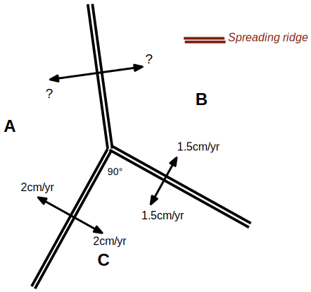
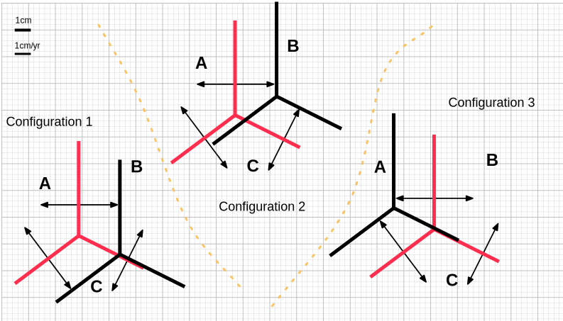
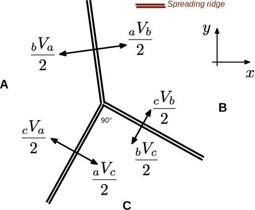
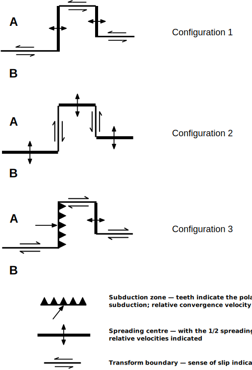

Exercises: Plate Kinematics#
A basic understanding of plate kinematics is helpful in understanding how systems of plates evolve and the boundary conditions they apply to the continental crust. It is also important to appreciate that the “rules” of plate boundary evolution are, in fact, emergent from complicated, multiscale systems.
You will need to read the notes on plate kinematics (section 2 of module 1) and it will help to have read John Dewey’s “PLATE TECTONICS.” Scientific American 226, no. 5 (1972): 56–72. 10.1038/scientificamerican0572-56
2.1 RRR triple junction velocities

A ridge-ridge-ridge triple junction with half-spreading rates labelled.
What is the magnitude in cm/yr of the half-spreading rate between plates A & B in the three-plate system in the diagram ?
Draw a selection of magnetic stripes on this diagram (in the reference frame of the triple junction to make things simple).
2.2 RRR triple junction evolution

A ridge-ridge-ridge triple junction with spreading directions / magnitudes shown in scaled arrows.
If we assume that plate A is fixed, which of the 3 configurations below represents the correct movement of the triple junction and three ridges from their original location (shown in black) to their new location a year later (shown in red).
Configuration 1
Configuration 2
Configuration 3
2.3 RRR triple junction vectors
Which combination of relative velocity vectors for the diagram of the ridge-ridge-ridge triple junction below is a possible solution .

Notes: (1) the diagram is drawn to scale, although you don’t need this information to answer the question ! (2) you should read \(_X V _Y\) as the relative velocity of plate Y with respect to plate X. The units are not important to answer the question but let’s say they are all cm/yr.
\(_A V _B\) = ( 5, 6 ); \(_B V _C\) = ( 2, 4 ); \(_C V _A\) = ( 3, 2 )
\(_A V _B\) = ( 5, 0 ); \(_B V _C\) = ( 1, 2 ); \(_C V _A\) = ( 4,-2 )
\(_A V _B\) = (-5, 0 ); \(_B V _C\) = (-1, 2 ); \(_C V _A\) = ( 6,-1 )
\(_A V _B\) = (5, 0 ); \(_B V _C\) = ( -1,-2 ); \(_C V _A\) = ( -4, 2)
2.4 Locking plate boundaries

Which of the plate boundary configurations in the diagram is not possible under the standard rules of plate tectonics (i.e. it’s locking / cannot evolve forward in time) ? Explain your reasoning. Note. The velocity vectors are not drawn precisely to scale.
2.5 Plate velocity closures and rollback

In the diagram on the right …
Is the plate boundary between plates A and C (dotted) a transform, spreading centre or subduction zone ?
What is the magnitude of the velocity across this plate boundary ?
Is the sense of the offset along the left-hand transform branch of the ABC triple junction actually left lateral (as marked) or should it have been drawn as a right lateral transform fault ?
What is the separation / convergence velocity of the line p-p’ ?
What is the separation / convergence velocity of the line q-q’ ?
What is the separation / convergence velocity of the line r-r’ ?
Hint: figure out the plate velocities relative to, say, plate A first of all, and then you can answer these questions relatively easily. Also, remember the spreading rate marked is the half spreading rate
Now sketch some magnetic stripes for this system.